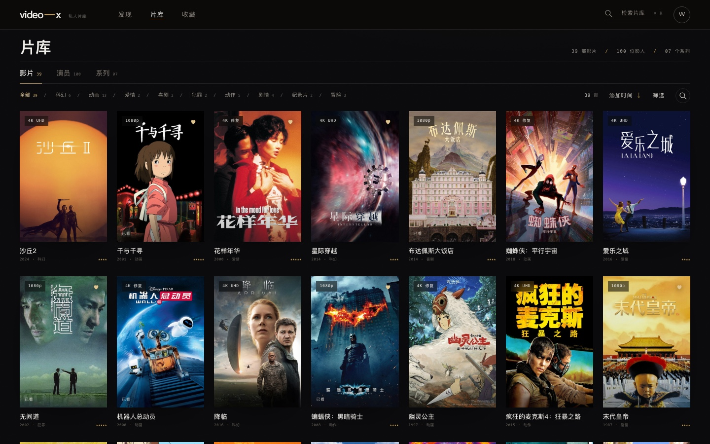

管理端
录入队列全宽；核对、发布、整理目标、分集容器等操作进入右侧抽屉。完整编辑仍是独立页面。没有“手动新建”。
v3 · 2026.11 · 基于 feat/film-catalog 代码
这一版不再从旧设计稿推导交互。入口、字段、状态和操作都按现有 apps/web、apps/admin 与 apps/android 重新映射：没有手动新建，没有侧栏常驻表单， 也没有宋体。

片库 / 7 列 / 无宋体一屏 14 部影片，片名和文件信息同时可读；页面不再是展示型海报墙。
Three clients
观看端让作品占主导；管理端让状态、字段和操作同屏；移动端把一级页面与底部导航固定下来，不再用浮层冒充页面。
Every module
管理端不再只画录入和影片库。以下每个路由都能在原型中打开；没有“手动新建”，只有当前实现已有的动作。
Sans only
标题使用 Avenir Next / PingFang SC；字段、文件与状态使用等宽字。管理端页头只保留标题、说明和操作，统计条固定 50px。
观看端 7 列海报；移动端 3 列影片 / 2 列系列；管理端表格 66–72px 行高，录入首屏 7 条草稿。
片库目录
Dune: Part Two
Avenir Next / PingFang SC · 标题
SF Mono · 日期、编号、文件
不使用 Songti / STSong
Scope
没有启动数据库，没有写入真实媒体盘。影片资料来自现有演示目录；草稿、任务、卷容量为界面演示值。
录入队列全宽；核对、发布、整理目标、分集容器等操作进入右侧抽屉。完整编辑仍是独立页面。没有“手动新建”。
发现、片库、收藏、我的、详情、播放均为一级页面；头像进入我的，收藏夹与喜欢分成两个区块。
收藏与我的都有页头和底部 Tab，不再用没有导航的浮层；分类按钮 44px 高；系列与收藏夹 2 列。
真实解码、上传、发布事务、Android 原生返回栈与权限。需要接入时按现有 API 契约逐页替换。
Open